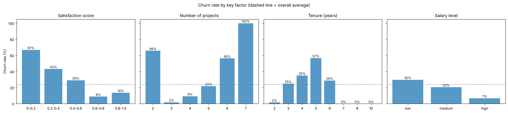
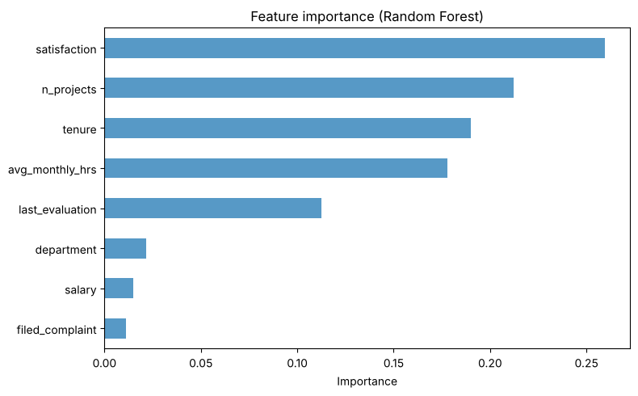

Question: Which employees are likely to leave, and what should HR do about it?
Approach: Cleaned HR data on 14,068 employees, analyzed churn drivers, then trained and validated five classifiers in Python.
Result: A Random Forest that catches 93% of leavers with 97% precision, plus four data-backed retention levers: satisfaction, workload, the 4–5 year tenure mark and pay.
Overview
The goal of this project was to identify employees who are likely to leave, using HR data on about 14,000 employees (satisfaction, tenure, salary, workload, complaints, evaluations and more). I aimed for an unbiased, end-to-end analysis: from cleaning and exploring the data to training, tuning and validating a model. The data is a public practice dataset from Kaggle, so the focus is on the method and the insights rather than the raw accuracy.
Results at a Glance
Steps Taken and Reasons
Steps I Took
- Step 1: Explored the data (EDA)
- Step 2: Cleaned and encoded the data
- Step 3: Measured churn rate by each factor
- Step 4: Trained and compared five models
- Step 5: Tuned and validated the best model
Why These Steps
- Step 1: To gain initial insights and guide the rest of the analysis
- Step 2: To handle missing values, duplicates and categories so the data is model-ready
- Step 3: To find what actually drives people to leave
- Step 4: To find which algorithm predicts churn best
- Step 5: To make sure the result is reliable, not a lucky split
What Drives Churn

- Satisfaction: 67% of employees with a score below 0.2 left, versus 9% of those scoring 0.6–0.8.
- Workload goes both ways: 66% of employees with only 2 projects left, as did 56% of those with 6 projects and all of those with 7. Employees with 3 projects almost never left (2%).
- The 4–5 year mark: churn climbs from 2% in year 2 to 57% in year 5, while no one with 7 or more years of tenure left.
- Pay: 30% of low-salary employees left, versus 7% of high-salary employees.
- Complaints are not a warning sign: employees who filed a complaint left less often (8%) than those who did not (27%), so complaints alone should not be used to spot flight risks.

The model agrees: satisfaction, number of projects, tenure and monthly hours are the most important features, while salary and complaints add little once the other factors are known.
Model Comparison
Scores below are for the "Left" class on a 20% validation set (2,814 employees).
| Model | Precision | Recall | F1-score |
|---|---|---|---|
| Logistic Regression | 0.64 | 0.36 | 0.46 |
| Decision Tree (depth 2) | 0.85 | 0.40 | 0.54 |
| SVC | 1.00 | 0.10 | 0.19 |
| K-Nearest Neighbors | 0.92 | 0.87 | 0.89 |
| Random Forest (5 trees) | 0.96 | 0.92 | 0.94 |
| Random Forest (100 trees, threshold 0.4), final | 0.97 | 0.93 | 0.95 |
Random Forest clearly outperformed the other models. To make sure the result is reliable, I:
- ran 5-fold cross-validation: macro F1 of 0.97 with very little variation (± 0.003) between folds;
- compared one-hot and ordinal encoding for department: no difference (0.970 vs 0.971), since tree models are not misled by the order;
- tested decision thresholds from 0.3 to 0.6 and chose 0.4: it raises recall from 92.2% to 93.0% for a small drop in precision, because missing someone who is about to leave costs HR more than a false alarm.
Sample Visualizations
EDA: distribution of employees who left

Correlation between variables

Training and comparing models

Code
Recommendations
Based on the churn drivers above, HR should focus on four levers:
- Track satisfaction and act early: run short, anonymous pulse surveys and follow up with anyone scoring below 0.4, the group where 43–67% of employees left.
- Balance workload: aim for 3–4 projects per person. Give under-used employees (2 projects) more meaningful work and redistribute projects away from those carrying 6 or more.
- Plan for the 4–5 year mark: schedule career conversations, promotion reviews or new challenges around year 4, before churn peaks in year 5.
- Review pay for low-salary staff: low earners leave four times as often as high earners; performance-based bonuses are a targeted way to close the gap.
The model's monthly risk scores can then point HR to the specific employees who need these conversations first.